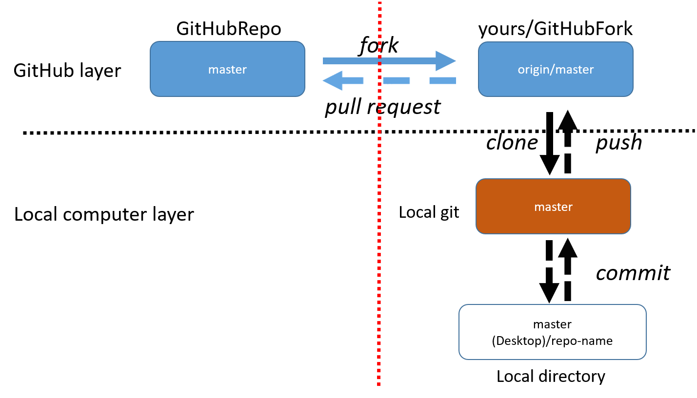

Git and GitHub Procedures
The purpose of this page is to document typical Git and GitHub workflows and to serve as a cheat sheet for remembering the commands. This page only covers the basic aspects related to Git version control and how one uses GitHub to contribute code.
Git and GitHub Background
As a code base evolves it will have existed in many versions. Almost all modern codes use some form of what is termed “version control” (VC) to manage these versions. Rather than attempting to do VC manually, most developers typically employ some form of VC software. Broadly speaking VC software provides two main services:
Management of a code’s history - Sophisticated “undo” feature
Merging disparate contributions into one code base - Manually merging contributions from different developers is error-prone - Good VC can merge code automatically by utilizing the common code history
Superficially all VC software follows a similar workflow. When a developer wants to work on a version controlled code base (called a repo), they:
Copy the repo
Modify the copy
Merge the copy back with the repo
Exactly how this process is done depends on the model adopted by the VC software managing the repo. Originally, most VC packages (like CVS and SVN) utilized what is called a centralized repo model. In a centralized model there is only one repo. Copies of that repo are intimately linked to the original repo. More modern VC packages, like Git and Mercurial, instead use what is called a distributed repo model. In this model, all copies of the original repo are perfectly legitimate repos on their own. Conceptually this means that any notion of “authoritative repo” is purely a social convention. The distributed repo model has a number of advantages compared to the centralized repo model:
Faster operations
No need to communicate with original (typically remote) repo
Encourages code-base to be saved more often
Easy collaboration
No need for messy three-way (original, and two copies) synchronization, only worry about copy to copy synchronization
Copies have access to all VC commands, which makes it much easier to share changes without going through original repo
Each repo is essentially a “back-up”, the original repo’s full history is in each copy
Given GitHub’s current popularity as a social coding platform it’s easy to lose sight of GitHub’s actual role in the VC process. GitHub itself is really nothing more than a website which hosts Git repos. Consequentially, there’s nothing special (from the perspective of Git) about the repo that lives on GitHub versus a copy of that repo living on any other computer. That said, given that GitHub is easily accessed by all developers and potential users, it’s typical to, by social convention, treat the GitHub repo as the “official” repo. GitHub’s popularity is largely fueled by the fact that in addition to being a place to host Git repos it also strives to encompass and simplify many other aspects of the development process (such as continuous integration and code-review). The following sections detail common Git commands and the typical GitHub workflow purposed for the NWChemEx project.
Common Git Commands
For the purposes of this tutorial we’ll assume that you’re working with an existing Git repo (if you’re not, the easiest way to make a repo is to do so on GitHub and then follow GitHub’s prompts). Once you know which repo you want to work on, the first step is to get your own copy (the copy is termed a clone in Git lingo). The command to clone a repo is:
git clone <path_to_repo> [<where_to_put_repo>]
This will checkout a repo that is located at path_to_repo and optionally
put it in a folder named where_to_put_repo (if you don’t specify
where_to_put_repo, the clone will be placed into a folder with the
same name as the repo you are cloning). It’s important to realize that
path_to_repo can be either a file path, to say clone a repo on your
internal network, or a website like GitHub. The remainder of the commands in
this section assume you are inside the resulting directory (Git will try to
access settings that are hidden in .git/ folders and will complain if said
folders don’t exist).
Typically one thinks of the code itself as having a single state. This state evolves as features are added to the code. The timeline of the code’s state is termed the “master branch” (history in Git is thought of as tree-like). By default the clone you get only has the master branch. A widely adopted convention of the Git community (adherence to which will make your life easier long term) is that the master branch should always be deployable (i.e. work and be relatively bug-free). This convention is easy to meet if we always keep this branch clean (i.e. don’t make your changes to it) and we keep it up to date. In an effort to keep the master branch clean the first thing you should do is thus make a new branch. This is done by:
git checkout -b <branch_name>
where branch_name is the name of the branch you’ll be working on. The
-b flag tells Git to make the branch (Git will yell at you if the branch
exists and you use the -b flag). The resulting branch starts a new timeline
that diverges from the master branch’s current state. All of your development
will occur on this branch. Since the branch has diverged from the master branch
it is safe to routinely track your changes, even before they’re ready to be
merged back into master.
At this point you begin developing your great new feature on your new branch. As time goes by and you write more and more code, you’ll reach a point where you’ll want to save the branch’s state with Git so that you can revert if something goes horribly wrong. To do this, first you have to tell Git what files you want to save:
git add <files_to_save>
where files_to_save is one or more files to save (Linux wild cards work,
e.g. git add *.cpp will save all C++ source files in the current directory).
After this command, the state of the files is not saved yet (they are what is
typically referred to as staged). The staging phase makes it easier for you to
fine tune what gets saved and what doesn’t. You can run git add as many
times as you want and keep amassing files to save. It’s useful to note that
you can get a wealth of information about the current repo’s state via:
git status
Among other things, this command will tell you which files are not versioned, which versioned files are changed, but not staged, and which versioned files are staged. Once you’re happy with the set of staged files, you “commit” them via:
git commit -m "<message>"
This command will save all staged files to your branch and log the commit
with some (hopefully descriptive) message (if you omit the -m flag and the
message it’ll bring up your text editor of choice so that you can type one).
After running this command your code’s state is saved; however, the files are
only saved to your current branch, they are not saved to any other branch
(other branch notably including the master branch) or repo yet.
At some point you’ll want to move your feature to another repo. Typically this
other repo is the original repo you cloned. Because we are now attempting to
partially synchronize two repos, there’s a lot of possibilities for how we want
to do this. In an effort to keep this simple, we note that 99.9% of the time,
using the GitHub workflow laid out below we want to synchronize a single branch
of each repo. Moreover we want to synchronize the same branch (that is we
typically will not be directly merging into master as explained below). For
simplicity we assume our current repo is on the branch we currently want to
synchronize (if you’re not git checkout <branch_to_synch>) and all changed
files have been committed. Before we can synchronize, we have to make sure we
have all of the changes on the original repo’s branch (if the original repo
doesn’t have this branch yet, i.e. your commit will make it, skip this step;
as with most things Git will yell at you if you attempt to synchronize with a
non-existent branch or if that branch is ahead of yours). The command to “pull”
the other branch’s changes is:
git pull origin <branch_name>
origin is an alias Git automatically defines for you, which points to the
original repo you cloned (obviously change origin if you’re not synchronizing
with the original repo). branch_name should be both the name of your current
branch and the name of the other repo’s branch. It is possible for conflicts to
occur at this point, so it’s worth discussing them now. Git’s pretty good about
merging contributions from multiple developers automatically. Nevertheless
conflicts do occur. If during a merge a conflict does occur, you’ll have to
correct it manually. To do this take note of the conflicting files (if you
forget you can get the list again by running git status). For each file
you’ll need to fix all conflicts contained within it. Within the file, Git
will add three delimiters. The conflicting lines of code will start with
<<<<<<< HEAD and end with >>>>>>> branch_name delimiters. In between
these delimiters ======= will separate your changes (top half) from the
other repo’s changes (bottom half). To fix the conflict, you’ll need to delete
the delimiters and manually merge the changes. Once you’ve done that you
stage and then commit the file. Finally, once all conflicts are fixed (if any
existed) you “push” your changes to the other repo:
git push origin <branch_name>
While it’s essential to keep the master branch of your repo clean, it’s also good practice to keep it synchronized with that of the repo you cloned (we’ll get to why in a moment). Synchronization of the the master branch is akin to the first half of the procedure we just outlined. First (assuming you’re on your development branch and not the master branch) change to your master branch:
git checkout master
then pull the original repo’s master branch via:
git pull origin master
Since you’re following this tutorial there’ll be no problems with the merge and everything will go swimmingly. With your master branch up-to-date you’ll want to merge those changes into your active development branch. To do this, check-out your development branch and run:
git merge master
This will merge the contents of your repo’s master branch into your current branch. Depending on how master has changed conflicts may occur; if they do, you simply deal with them as we did above.
GitHub Workflow
The commands from the previous section are complemented by several GitHub extensions. We explain these extensions in this section. For the purposes of this tutorial, let’s say you want to contribute to a very creatively named repo on GitHub called “GitHubRepo”. Well we’ve got two problems. First, the maintainers of “GitHubRepo” probably don’t want you directly committing to their code base without them first looking at your contribution (“looking at” is typically automated to some extent). Hence, they’ll need to pull your changes into a sandbox area and assess them before committing them. This leads to the second problem, you probably don’t want them accessing your computer. GitHub has purposed a solution, it’s called forking. Alls it is, is a fancy clone procedure. During forking GitHub clones “GitHubRepo” to your account (thereby hosting the clone on GitHub itself). We’ll call the resulting clone “GitHubFork”. Basically “GitHubFork” is a buffer repo that you both can access comfortably (as in the spirit of Git itself each fork is a legitimate GitHub repo itself and can be forked too, great for allowing the workflow described here to be done recursively for collaborations). As for how to fork, on “GitHubRepo“‘s GitHub page just click the fork button at the top.
After forking, the Git procedure continues like normal. You clone “GitHubFork” to your local machine and checkout a new branch preserving master. To save yourself some typing later you’ll want to define an alias for “GitHubRepo” (origin will be set to “GitHubFork”). Typically this alias is called “upstream”. To make this alias the command is:
git remote add upstream <path_to_original_repo>
It is polite at this point to notify the maintainers of “GitHubRepo” that you’re going to work on this feature. To do this you first push your development branch to “GitHubFork”. Then on “GitHubFork“‘s GitHub page you should see a box pop up that says your branch’s name and “compare and pull request” (if not you can go to the branches tab and manually start a pull request). A pull request is just that, it’s a request for the maintainers of “GitHubRepo” to pull the specified branch into their repository. Since you’re opening this PR (that’s short for pull request and is a very prevalent abbreviation on GitHub, so learn it) before finishing the code, it’s customary to title the PR something like “[WIP] Descriptive Title”. Here “WIP” stands for “work in progress” (again common abbreviation) and tells the maintainers that it’s not ready yet. You’ll also need to provide a description of what your feature does (many repos will provide a template that you should fill out to the best of your ability). Starting the PR early is a good idea as it provides you a means of getting feedback along the way ranging from “don’t bother doing this, we don’t want your feature” to “that’s great, let us know if there’s any way we can help you get that implemented”. It also will be the place where a code-review (the maintainers of the repo look at your code and make comments on it) will occur. By starting early the code-review can be done in stages (assuming you regularly update “GitHubFork”).
For the most part the remainder of the development cycle is pretty standard. The big exception is staying synchronized with “GitHubRepo”. Since other developers who contribute to “GitHubRepo” aren’t going to be nice enough to push their changes to your fork of the repo, you can’t just run the pull command from the last section. Hence, in order for you to stay up-to-date with “GitHubRepo” you’ll need to pull changes from its master branch into your local master branch. The command is similar (and the reason we defined the “upstream” alias):
git pull upstream master
With your local master branch synched, you’ll then want to synch “GitHubFork“‘s master branch. To do this you’ll push the local changes to “GitHubFork”. The command is:
git push origin master
Although not strictly necessary, this step makes it easier for you to recover should anything go wrong. In particular let’s say you accidentally modify your local master branch. By ensuring your “GitHubFork” master branch is a clean copy of the “GitHubRepo“‘s at some point in its history you can run (on your master branch):
git reset --hard origin/master
This command will delete all changes made to your current master branch, and make it exactly equal to the state of “GitHubFork“‘s master branch. YOU WILL ALMOST CERTAINLY LOSE WORK BY DOING THIS. It’s thus best to first checkout a new branch, that is a copy of the current master branch, before executing this command.
Once you’re done developing you need to notify the “GitHubRepo” maintainers. This is typically done in two ways. First, the “[WIP]” tag is removed from the title of your PR. As this is easy to miss, you typically will also comment in the PR “r2g” (short for ready to go). Comments are a lot harder to miss. At this point the ball’s in the maintainers court to accept your PR or provide additional feedback of things that need fixing (which assuming you were pushing to “GitHubFork” regularly, will hopefully not be a long list). Once the PR is approved either you or the maintainers will click on the “merge” button provided by GitHub and your code will be merged. That’s it, your feature is merged, the PR is closed, and you can delete your branch. It is recommended that the contributor clicks merge in order to avoid premature merging (simply because the reviewer has accepted what’s there doesn’t mean that the contributor is done contributing via that PR).
The image below summarizes the discussion above. The left side of the red line is the GitHub “official” repo. On the right side of the red line are the repos that you (the developer) own. Above the black dotted line are the repos on GitHub and below the black line are the repos that live locally on your own computer (or other computers you are using).
Further Information
There is much more to both GitHub and Git itself. The following is a collection of tutorials offering additional information on certain topics.